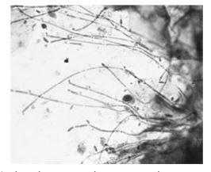
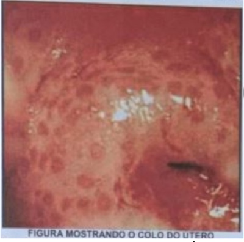
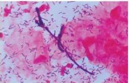
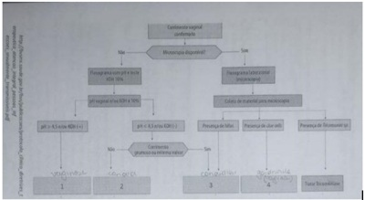
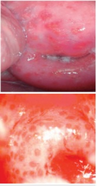

Questão 1 · Tratamento · Diagnóstico · Quadro clínico · 4000124765Paciente, 40 anos, diabética, portadora do vírus HIV há dois anos, G4 P4, sexualmente ativa atendida na Unidade Básica de Saúde, apresentando há duas semanas quadro de prurido vulvar, corrimento vaginal e dispareunia. Nega uso de preservativos. Ao exame ginecológico, são observados edema e eritema de pequenos lábios, ssuras em região perineal. Exame especular evidencia secreção branca grumosa aderida às paredes vaginais. A principal hipótese diagnóstica e o melhor tratamento para o caso descrito são, respectivamente:
A candidíase vulvovaginal não complicada / clotrimazol 1% creme vaginal de 7 a 14 dias ou fluconazol 150mg uma dose a cada 72 horas (total de três doses).
B candidíase vulvovaginal complicada / clotrimazol 1% creme vaginal de 7 a 14 dias ou fluconazol 150mg, uma dose a cada 72 horas (total de três doses).
C candidíase vulvovaginal complicada / fluconazol 150mg em dose única.
D tricomoníase / metronidazol 500mg duas vezes/dia durante 7 dias.
E vaginose bacteriana / metronidazol 2g via oral em dose única.
Questão 2 · Tratamento · Tratamento · Tratamento · 4000124370Sobre tratamentos de vulvovaginites na gestação, é CORRETO.
A Para candidíase sintomática, dar-se preferência ao uso de azólicos orais, em comparação aos imidazólicos tópicos.
B Para tricomoníase, o secnidazol ou tinidazol, 2g via oral, dose única, são considerados de primeira escolha.
C Segundo CDC, o metronidazol pode ser administrado com segurança na gestação pois é categoria B pela FDA.
D Mulheres com alto risco para parto prematuro devem realizar testes de rotina para pesquisa de vaginose bacteriana, tricomoníase e candidíase.
E Os casos sintomáticos de vaginose bacteriana podem ser tratados com metronidazol via oral ou geleia vaginal e o tratamento do parceiro é recomendado.
Questão 3 · Tipos de f lora vaginal · 4000119983Mulher de 32 anos apresenta corrimento vaginal persistente sem melhora após diversos tratamentos. Refere último tratamento há 40 dias, com creme vaginal que não sabe o nome, por sete dias. Nega mau odor genital e/ou prurido. Tem hábito de higienizar a região genital várias vezes ao dia com sabonetes perfumados. Exames microscópicos do conteúdo vaginal (imagens a seguir). O diagnóstico e a conduta são:

A candidíase vaginal; isoconazol creme vaginal a 1% por 7 dias.
B vaginose citolítica; banho de assento com chá de camomila frio.
C vaginite descamativa inflamatória; clindamicina creme vaginal a 2% por 7 dias.
D conteúdo vaginal fisiológico; adequar higiene genital.
Questão 4 · Etiologia · Abordagem da paciente com queixa de corrimento vaginal · 4000115568Mulher traz sua lha de 5 anos ao setor de emergência, relatando que esta iniciou há quatro dias quadro de dor pélvica e descarga vaginal sero-sanguinolenta, após quadro viral. O exame genital confirma o corrimento e o teste de amina é negativo. Considerando o caso descrito, assinale a etiologia PROVÁVEL:
A Infecção oportunista por Cândida.
B Corrimento relacionado a corpo estranho.
C Caso de abuso e infecção por Trichomonas.
D Corrimento relacionado a infecção por Streptococcus.
Questão 5 · Quadro clínico · 4000114647Paciente se queixa ao ginecologista de corrimento vaginal fétido, branco e leve irritação vulvovaginal. Ainda segundo a paciente, o odor se intensi ca após relações sexuais. O ginecologista após exame ginecológico informa à paciente que ela está com vaginose bacteriana provavelmente por Gardnerella vaginalis ou Mobiluncus. Diante deste quadro, é correto afirmar que
A é bem provável que o pH vaginal esteja acima de 4,5 e o teste das aminas (Whiff-test)seja positivo.
B só se pode finalizar o diagnóstico com o exame das glândulas de Bartholin e Skene.
C o diagnóstico está correto e deve-se rotineiramente tratar o casal pois a informação dapiora após relações sexuais, demonstra acometimento de ambos.
D deve ser solicitada bacterioscopia de conteúdo vaginal com critérios de Amsel.
E a pesquisa de células alvo é fundamental para se conhecer o agente causal, se Gardnerella ou Mobiluncus.
Revisar: possível letra faltando em enunciado
Questão 6 · Diagnóstico · Quadro clínico · 4000114350Mulher de 25 anos de idade queixa-se de secreção vaginal aumentada, sempre com odor desagradável, que piora após relação sexual. Fez uso de vários cremes vaginais sem melhora. Nega dor ou ardor vaginal. Ao exame, observa-se corrimento vaginal discretamente aumentado, acinzentado, que libera odor desagradável quando se adiciona KOH a 10%. De acordo com a hipótese diagnóstica, qual seria o pH vaginal e as características microscópicas desse corrimento?
A pH>4,5 com poucos leucócitos
B pH<4,5 com muitos leucócitos
C pH entre 3 e 5 com coilocitose
D pH <3 com células alvo
Questão 7 · Vulvovaginites · 4000110927Sobre as vulvovaginites, assinale a alternativa correta.
A Na vaginose bacteriana o Ph vaginal encontra-se < 4,5 e há aumento dos lactobacilos.
B A candidíase apresenta teste das aminas (wiff test) negativo e é mais frequente antes das menstruações.
C A vaginose bacteriana causa reação inflamatória, com vaginite importante.
D Mulheres assintomáticas com presença de Gardnerella vaginalis na colpocitologia oncótica devem ser tratadas.
E Na candidíase vaginal não recorrente, com prurido intenso, preconiza-se tratar o parceiro.
Questão 8 · Vulvovaginites · 4000108189Considere a imagem abaixo. O esfregaço de células vaginais mostrado na imagem revela a presença de

A HPV.
B fungos.
C Clamidia trachomatis.
D Trichomonas.
E Gardnerella vaginalis.
Questão 9 · Corrimento vaginal f isiológico · Ecossistema e mecanismos de def esa vaginal · 4000106086Em relação ao ambiente vulvo-vaginal, assinale a alternativa correta:
A O pH é normalmente alcalino.
B A cândida não existe na forma comensal, sendo sempre patológica.
C O lactobacilo não tem função bem definida no ambiente vaginal.
D O tricomonas deve ser considerado como infecção sexualmente transmitida.
Questão 10 · Consequências da inf ecção · 4000105222Fabiana está grávida pela primeira vez, tem 32 semanas de gestação, e queixa-se a enfermeira Lizete que há 3 dias iniciou corrimento amarelado com odor fétido, sem prurido. É a primeira vez que isto ocorre em sua vida. No grupo de gestantes, na semana passada, a agente comunitária alertou sobre quando deveriam procurar ajuda, e citaram o corrimento. Assinale a alternativa correta:
A Vaginose bacteriana, que pode ser o diagnóstico de Fabiana, tem sido associada ao nascimento de crianças com baixo peso e parto prematuro e, portanto, deve ser tratada
B Fabiana pode estar com mucorreia, condição comum na gravidez, e o aviso no grupo de gestantes pode ter desencadeado preocupação desnecessária
C A vulvovaginite é uma condição comum na gestação e pode ser o diagnóstico de Fabiana, contudo o tratamento não poderá ser iniciado sem a identificação etiológica específica
D Fabiana provavelmente tem vaginose bacteriana, porém pode esperar outros métodos diagnósticos para a confirmação etiológica, já que o tratamento não está relacionado à redução de risco de parto prematuro
Questão 11 · Vulvovaginites · 4000099756Mulher, 35a, vem com queixa de corrimento vaginal abundante há 30 dias. Exame ginecológico: secreção branco- acinzentado em pequena quantidade, pH=4,5, teste das aminas positivos e ausência de hiperemia de paredes vaginais. Bacterioscopia vaginal (ANEXO A): OS ACHADOS HISTOLÓGICOS QUE CONFIRMAM O DIAGNÓSTICO SÃO:

A Hifas e leveduras.
B Excesso de lactobacilos e células-guia (clue cells).
C Células-guia (clue cells) e ausência de leucócitos
D Excesso de bactérias e de lactobacilos.
Questão 12 · Candidíase vulvovaginal recorrente · 4000093259Qual o conceito de candidíase recorrente (CDC/2015 e Protocolos FEBRASGO/2019)?
A Um novo episódio com intervalo inferior a dois meses.
B Dois ou três episódios em seis meses.
C Três episódios consecutivos com a mesma espécie.
D Três episódios com intervalos inferiores a três meses.
E Quatro ou mais episódios em 12 meses.
Questão 13 · Tratamento · 4000089252Uma paciente com vaginose bacteriana apresenta alergia a metronidazol. Nesse caso, a melhor alternativa medicamentosa é:
A Fentizol.
B Miconazol.
C Doxiciclina.
D Clindamicina.
Questão 14 · Teste das aminas · 4000084459O teste das aminas (Whiff) é positivo na presença de:
A Candidíase vaginal.
B Vaginose bacteriana.
C Vaginite atrófica.
D Gonorreia.
Questão 15 · Candidíase nãocomplicada · Quadro clínico · 4000084023Gestante, 34 semanas, vem consultar por apresentar prurido vulvar e secreção aumentadas há uma semana. Refere boa movimentação fetal, nega contrações ou perdas vaginais. Ao exame físico, há edema de vulva, secreção esbranquiçada e grumosa. Na microscopia, se visualiza a presença de hifas. Sobre o diagnóstico e o tratamento nesse caso, está correto, respectivamente:
A Vaginose bacteriana e uso de metronidazol via oral.
B Candidíase vulvovaginal e uso de miconazol tópico.
C Tricomoníase e uso de metronidazol tópico.
D Infecção por clamídia e uso de doxiciclina.
Questão 16 · Tratamento · Tratamento · Candidíase · 4000083372Sobre os corrimentos vaginais podemos afirmar:
A Na vaginose bacteriana recomenda-se o tratamento do parceiro.
B O tratamento preconizado para a tricomoníase deve ser sistêmico.
C O uso tópico de lactobacilos é uma opção de tratamento da vaginose bacteriana.
D A candidíase é a principal causa de corrimento vaginal patogênico.
Questão 17 · Diagnóstico · Quadro clínico · 4000073834Mulher, 27 anos, com corrimento vaginal e prurido vulvar. Ao exame: conteúdo vaginal branco, grumoso, aderente à parede vaginal. Assinale a alternativa CORRETA sobre o diagnostico mais provável:
A São esperados clue cells no exame a fresco.
B O teste das aminas estará negativo.
C Trata-se de uma infecção sexualmente transmissível.
D O pH estará aumentado.
Questão 18 · Candidíase · 4000062713Em relação à vulvovaginite por cândida, atribua V (verdadeiro) ou F (falso) às afirmativas a seguir. ( ) Não há contraindicação médica à relação sexual durante o tratamento. ( ) Cândida glabrata tem alta virulência vaginal e, frequentemente, causa sintomas vaginais. ( ) Candidíase vulvovaginal recorrente é definida como quatro ou mais episódios de infecção sintomática dentro de um ano. ( ) Antifúngicos orais levam um ou dois dias a mais do que a terapia tópica para aliviar os sintomas. ( ) Tratamentos tópicos possuem mais efeitos colaterais em relação à via oral. Assinale a alternativa que contém, de cima para baixo, a sequência correta.
A V, V, F, F, F.
B V, F, V, V, F.
C F, V, V, F, V.
D F, V, F, F, V.
E F, F, V, V, F.
Questão 19 · Tratamento · Quadro clínico · 4000056751Jovem, 15 anos de idade, nuligesta, deseja iniciar vida sexual. Vem para consulta solicitando orientação anticoncepcional. Refere ciclos regulares, com duração de 28-30 dias, com sangramento de duração de 4 dias. Nega antecedente pessoal ou familiar de trombose ou tabagismo. Refere enxaqueca com aura. Ao exame clínico: palpação abdominal sem alterações, inspeção vulvar dentro da normalidade. Seis meses após a primeira consulta, a paciente retorna após coitarca. Refere amenorreia, 3 meses após definição de anticoncepcional. Por ter relacionamento que considera sério, não faz uso de preservativos. Refere queixa de leucorreia amarelada de odor fétido, prurido vaginal e dispareunia. Ao exame especular: presença de leucorreia amarelada acompanhada de pequenas bolhas. Paredes vaginais e ectocérvice hiperemiados. Qual é a conduta adequada?
A Miconazol, coleta de sorologias, referenciar o parceiro para tratamento.
B Metronidazol, coleta de sorologias, orientar tratamento para o parceiro sexual.
C Anfotericina B, coleta de citopatológico, referenciar o parceiro para tratamento.
D Fluconazol, coleta de sorologias, orientar o parceiro sexual para tratamento.
Questão 20 · Vulvovaginites · 4000047673Mulher de 25 anos, com vida sexual ativa queixa-se de corrimento vaginal amarelo- esverdeado e prurido vulvar. Ao exame físico ginecológico: conteúdo vaginal abundante, amarelo-esverdeado e bolhoso; colpite difusa com aspecto de framboesa; teste de Schiller com aspecto tigróide. Com base no exame físico e principal hipótese diagnóstica e melhor medicamento dentre as opções abaixo a ser administrados é:
A metronidazol
B nistatina
C isoconazol
D ácido tricloroacético
E fanciclovir
Questão 21 · Corrimento vaginal f isiológico · Ecossistema e mecanismos de def esa vaginal · 4000042686O pH vaginal ácido ocorre, pois o lactobacilo converte:
A Glicogênio em acido sulfúrico.
B Nitrito em nitrato.
C Nitrogênio em nitrato.
D Glicogênio em acido lático.
Questão 22 · Corrimento vaginal f isiológico · Vaginose bacteriana · Tricomoníase · 4000039412Associe o tipo de VULVOVAGINITE como quadro clínico e marque a resposta correta: I- Vaginose bacteriana; II-Tricomoníase; III- Candidíase; IV- Secreção fisiológica; A- Corrimento com grumos, branco, assocoado a prurido, disúria; B- Corrimento fino, branco-acinzentado, homogêneo, às vezes com microbolhas, piora o odor com o coito; C- Secreção clara, homogênia, sem odor, quantidade variável; D- Secreção amarelo-esverdeada, mal cheirosa, dispareunia
A ID ; IIA; IIID; IVC
B ID; IIB; IIIA; IV C
C IB; IID; IIIA; IV C
D ID; IIA; IIIB; IVC
Questão 23 · Diagnóstico · 4000037707Paciente com 21 anos fez um exame colpocitológico e tem-se o seguinte resultado: alterações reativas, ora cocobacilar, ausência de bacilos de Döderlein e presença de células-guias. Qual a hipótese diagnóstica?
A Infeçção por herpes genital.
B Infecção por clamídia.
C Infecção por papilomavírus humano.
D Vaginose bacteriana.
E Tricomoníase.
Questão 24 · Corrimento vaginal f isiológico · 4000036388A mucorreia é definida pelo volume excessivo de secreção vaginal siológica, sendo um achado muito frequente na prática clínica. Diante de uma paciente com este diagnóstico, a conduta mais adequada é:
A prescrever creme vaginal à base de antifúngicos
B prescrever creme vaginal à base de metronidazol
C prescrever tratamento combinado com creme vaginal e medicação oral
D assegurar à paciente que, nesse caso, as secreções vaginais são normais
Questão 25 · Diagnóstico · Tratamento · Quadro clínico · 4000033091Mulher de 33 anos, secundigesta, com atraso menstrual de 15 dias, sexualmente ativa, sem uso de preservativo, procura a UBS relatando corrimento vaginal amarelado, com ""mau cheiro"", ardência vaginal e dispareunia há sete dias. Ao exame especular observa-se eritema vaginal, colo uterino com pontilhado avermelhados de aspecto semelhante a ""framboesa"", secreção amarelada bolhosa e com odor forte. A conduta MAIS ADEQUADA é:
A prescrever azitromicina 1g via oral em dose única.
B prescrever metronidazol, 2g, via oral, em dose única.
C solicitar dosagem sérica de beta-hCG antes de iniciar tratamento.
D solicitar sorologias para infecção sexualmente transmissível (IST) antes de iniciar otratamento.
Questão 26 · Tratamento · Diagnóstico · Quadro clínico · 4000031851V.M.B., de 35 anos, comparece à consulta com queixa de leucorreia clara, prurido e irritação vulvovaginal, além de odor desagradável, que piora após a relação sexual, há 5 dias. Ao exame a fresco da secreção vaginal, apresentou pH >4,5, com teste de Whiff positivo e >20% de clue cells. Quais são a hipótese diagnóstica e o tratamento recomendado?
A vaginose bacteriana; metronidazol 500 mg via oral a cada 12 horas, por 7 dias
B tricomoníase; metronidazol 2 g via oral, em dose única
C candidíase; fluconazol 150 mg via oral, em dose única
D clamídia; azitromicina 1 g via oral; em dose única
Questão 27 · Diagnóstico · 4000030501Candidíase vulvovaginal complicada é um tipo recorrente da infecção por Cândida (quatro ou mais episódios por ano), apresentando-se em geral de maneira grave e sendo normalmente causada por Candida não albicans. Nestes casos, o exame que pode auxiliar o diagnóstico é a
A colpocitologia oncoparasitária.
B bacterioscopia a fresco.
C bacterioscopia pelo Gram.
D polymerase chain reaction (PCR).
Questão 28 · Flora vaginal na criança · Flora vaginal em recémnascidas · 4000030387Criança de cinco anos, com corrimento e prurido. Ao exame físico, verifica-se corrimento amarelado e fétido associado a hiperemia e escoriações vulvar e perianal. Diante deste quadro, a principal hipótese diagnóstica e o tratamento são, respectivamente:
A corpo estranho; retirada do corpo estranho e antibióticos.
B vulvovaginite inespecífica; medidas higiênicas e antibióticos.
C candidíase; medidas higiênicas e antibióticos.
D verminose; anti-helmínticos.
Questão 29 · Diagnóstico · Tratamento · Quadro clínico · 4000030341Gestante com 16 semanas de gestação refere corrimento com prurido, ardência genital e odor fétido, que piora após os coitos. Ao exame físico, encontra-se corrimento amarelado, bolhoso e fétido associado e colpite focal. A hipótese diagnóstica mais provável e o tratamento são, respectivamente:
A vaginose; derivados imidazólicos.
B candidíase; antifúngicos.
C vaginite inflamatória descamativa; corticoides.
D trichomoníase; derivados imidazólicos.
Questão 30 · Abordagem da paciente com queixa de corrimento vaginal · 4000028967Paciente de 28 anos queixa-se de corrimento vaginal abundante, amarelo esverdeado, bolhoso e odor fétido. A propedêutica prática para complementar o diagnóstico a ser realizado é:
A biópsia de mucosa vaginal.
B coloração de Gram.
C cultura.
D exame a fresco.
Questão 31 · Abordagem da paciente com queixa de corrimento vaginal · 4000027733Lívia apresenta corrimento vaginal mais intenso que seu habitual nos últimos 15 dias. Está em um relacionamento monogâmico há 3 anos com seu namorado. Em relação aos corrimentos vaginais, MARQUE A CORRETA:
A O teste das aminas positivo exclui o diagnóstico de vaginite atrófica.
B Existe uma associação entre vaginose bacteriana e ruptura prematura de membranas em gestantes.
C Metronidazol tópico é o tratamento de primeira linha em gestantes que apresentem o diagnóstico de tricomoníase vaginal.
D As espécies de Candida como C. glabrata e C. tropicalis, costumam responder bem ao tratamento com Fluconazol dose única.
Questão 32 · Vaginose bacteriana · 4000024028Uma paciente de 50 anos de idade vai a consulta em UBS com queixa de corrimento vaginal acinzentado e com odor fétido na última semana. Refere também que gostaria de realizar check-up, pois não se consulta com médico há mais de 10 anos e está preocupada, pois a própria mãe foi diagnosticada com câncer de mama quando tinha 68 anos de idade. História médica pregressa: G6P6A0, diagnóstico prévio de sí lis tratada recentemente e coitarca aos 14 anos de idade. Tabagista de um maço de cigarro ao dia desde os 15 anos de idade. Considerando esse caso clínico e os conhecimentos médicos relacionados à saúde da mulher, julgue o item a seguir. Considerando diagnóstico de vaginose bacteriana por Gardnerella vaginalis, o tratamento poderá ser feito com metronidazol via oral, devendo-se, ainda, convocar parceria sexual para tratamento adequado do casal.
A Certo.
B Errado.
Questão 33 · Tratamento · Diagnóstico · Abordagem da paciente com queixa de corrimento vaginal · 4000007193Uma paciente com queixa de prurido vulvar apresenta exame de papanicolaou cujo laudo demonstra a presença de hifas. A melhor conduta nesse caso deve ser:
A somente orientar a realizar banho de assento com bicarbonato.
B tratar como vaginose bacteriana.
C tratar como candidíase.
D tratar somente com metronidazol via oral.
Questão 34 · Quadro clínico · 4000003888A presença de petéquias no colo uterino sugere o diagnóstico de:
A Monilíase
B Congestão pélvica
C Tricomoniase vaginal
D Púrpura trombocitopênica
Questão 35 · Vulvovaginites · 4000118449Considere as afirmações abaixo a respeito das características observadas em secreção vaginal. I. pH vaginal abaixo de 3,5. II. presença de Mobiluncus. III. diminuição acentuada de lactobacilos. IV. presença de filamentos ramificados e brotamentos. O diagnóstico de candidíase vaginal é compatível com o descrito APENAS em
A I, II e III.
B I e IV.
C II e III.
D II e IV.
E II, III e IV.
Questão 36 · Tipos de f lora vaginal · 4000113679Constitui achado fisiológico na microbiota vaginal, predomínio de flora:
A Aeróbica, principalmente bastonetes gram-negativos, com pH menor que cinco.
B Anaeróbica, principalmente bastonetes gram-positivos, com pH maior que cinco.
C Anaeróbica, principalmente bastonetes gram-positivos, com pH menor que cinco.
D Aeróbica, principalmente bastonetes gram-positivos, com pH menor que cinco.
E Aeróbica, principalmente bastonetes gram-negativos, com pH igual a sete.
Questão 37 · Vulvovaginites · Doença Inf lamatória Pélvica · Úlceras genitais · 4000108445Alguns processos infecciosos e inflamatórios favorecem a transmissão do HIV, a exemplo, as doenças sexualmente transmissíveis não ulcerativas como:
A Cancro mole.
B Herpes.
C Sífilis.
D Tricomoníase
Questão 38 · Vulvovaginites · 4000106731Mulher de 47 anos está em consulta de rotina na unidade de saúde da família com queixa de corrimento via vaginal, com odor fétido e dor durante a relação sexual. Após o exame ginecológico e colpocitológico, recebeu o diagnóstico de vulvovaginite. Diante do exposto é correto afirmar:
A Em 30% das mulheres saudáveis, assintomáticas, a Candidase. pode ser isolada na vagina.
B Há uma baixa ocorrência de vaginose bacteriana em mulheres homoafetivas, o que sugere a importância do coito nas alterações da flora vaginal normal.
C Durante a menstruação e o coito, o odor desagradável encontrado na vaginose bacteriana se agrava devido à acidificação do pH, o que facilita a volatização das aminas produzidas pelos patógenos.
D O efeito antabuse ocorre quando há consumo de álcool concomitante ao tratamento com tinidazol. Deve-se orientar a paciente a não ingerir álcool até o momento da ingestão do último comprimido deste medicamento.
Questão 39 · Vulvovaginites · 4000106410Jovem de 18 comparece a consulta em UBS com queixa de dispareunia, disúria e sensação de calor e ardor vaginal e corrimento com odor fétido há 10 dias, sem dor abdominal. É nulípara, tem uxo menstrual regular, parceiro único assintomático e faz uso de contraceptivo hormonal combinado. Ao exame físico apresenta mucosa vaginal e colo com edema e hiperemia. Não há sangramento ou friabilidade cervical ou sinais de secreção mucopurulenta. A mobilização do colo é indolor. A medida de pH vaginal mostrou ser igual a 5,5. A figura apresenta o aspecto do colo do útero. Tendo em mente o agente etiológico causador desta afecção mais provável, assinale a alternativa que ofereça o melhor tratamento.

A Miconazol creme vaginal a 2% tópico durante 7 dias.
B Doxiciclina 100 mg a cada 12 horas durante 7 dias.
C Azitromicina 1 g via oral + ceftriaxona 250 mg intramuscular, ambos dose única.
D Metronidazol 400 mg a cada 12 horas durante 7 dias
Questão 40 · Vulvovaginites · 4000103215Mulher com 44 anos procura a UBS com queixa de corrimento vaginal. A identi cação de suas características permite afirmar que se:
A tiver prurido, odor fétido, fluxo amarelado e hiperemia de colo, o corrimento vaginal é devido à candidíase.
B apresentar prurido, mas sem odor, aderente às paredes vaginais, edema e ardência às relações, o corrimento vaginal é devido à tricomoníase.
C apresentar odor e sem prurido, piorando com a relação sexual, cor branca ou amarelada e pH > 4,5; o corrimento vaginal é devido à vaginose bacteriana.
D apresentar odor e sem prurido, dor durante as relações sexuais e pH < 4,5, o corrimento vaginal é devido à vaginite atrófica.
Questão 41 · Flora vaginal na criança · 4000101741Quanto ao corrimento genital na infância é INCORRETO afirmar que:
A A maior parte dos casos está associada a agentes infecciosos inespecíficos.
B A infecção por cândida sp é a principal causa de vulvovaginite na infância.
C Corpo estranho deve ser sempre considerado no diagnóstico diferencial.
D A infecção por enterobius vermicularis encontra-se entre os diagnósticos diferenciais.
Questão 42 · Abordagem da paciente com queixa de corrimento vaginal · Tratamento · Quadro clínico · 4000092291Mulher, 30 anos, GIPI, relata corrimento vaginal abundante, amarelo-esverdeado e fétido. Qual a melhor conduta?
A Prescrever secnidazol 1 g associado à aplicação noturna de metronidazol gel vaginal.
B Prescrever metronidazol gel vaginal, uma aplicação noturna por 10 dias.
C Realizar exame de secreção vaginal.
D Realizar exame preventivo.
E Exame especular.
Questão 43 · Tricomoníase · 4000091890Quanto à tricomoníase vaginal, assinale a alternativa CORRETA.
A Os recém-nascidos de mães infectadas podem contrair infecção durante o parto e apresentarem febre e corrimento vaginal.
B Pode ser uma doença sexualmente transmitida, mas o parceiro deve ser tratado apenas se for sintomático.
C O Trichomonas vaginalis se desenvolve melhor no meio vaginal básico (pH entre 7 e 8), o que ajuda o diagnóstico.
D Devido ao tamanho do protozoário, a resposta terapêutica é melhor com a aplicação tópica do que com a administração oral do metronidazol.
E A maioria das mulheres infectadas são sintomáticas e a principal queixa é o prurido.
Questão 44 · Vaginose bacteriana · 4000091470Sobre a vaginose bacteriana, assinale a alternativa CORRETA.
A Caracteriza-se por uma mudança na flora vaginal normal, para espécies bacterianas mais diversas, incluindo anaeróbios facultativos.
B Geralmente ocorre uma alteração do microbioma, causando uma redução no pH vaginal e sintomas de intensidade variada.
C O exame de papanicolaou é confiável para o diagnóstico da vaginose bacteriana, com alta sensibilidade, mas baixa especificidade.
D A infecção assintomática deve ser sempre tratada, devido ao risco de desenvolvimento de doença inflamatória pélvica.
E A azitromicina e a amoxacilina são alternativas eficazes, quando houver intolerância aos imidazólicos.
Questão 45 · Critérios de Amsel · 4000081128Alguns especialistas relatam que a vaginose bacteriana (VB) é "a causa mais frequente dos sintomas vaginais que resultam em consultas médicas". O diagnóstico dessa patologia é iminentemente clínico, mas nem sempre a descarga vaginal fétida e sem irritação característica está presente. Em 1993, foram propostos por Amsel alguns critérios, que são usados até hoje, para o diagnóstico desta patologia, EXCETO:
A whiff test positivo
B teste com fita de pH vaginal > 4,5
C citologia a fresco com solução salina evidenciando clue-cells
D presença de dois ou mais morfotipos bacilares por campo de grande aumento
Questão 46 · Abordagem da paciente com queixa de corrimento vaginal · 4000078961Em atendimento no ambulatório de ginecologia a médica residente examinou quatro pacientes com as seguintes características de conteúdo da secreção vaginal: Em atendimento no ambulatório de ginecologia a médica residente examinou quatro pacientes com as seguintes características de conteúdo da secreção vaginal: Paciente A: corrimento branco, claro, sem sintomas. Paciente B: corrimento no, cinza, aderente, aumentado com odor fétido. Paciente C: corrimento branco tipo “queijo cottage” com sintoma de prurido e queimação. Paciente D: corrimento verde amarelado, espumoso, aderente, com sintoma de disúria e prurido. Assinale a opção que mostra a relação paciente/diagnóstico correto:
A Paciente A: corrimento fisiológico; Paciente B: tricomoníase; Paciente C: candidíase; Paciente D: vaginose bacteriana.
B Paciente A: mucorreia; Paciente B: corrimento necrótico; Paciente C: tricomoníase; Paciente D: vaginose bacteriana.
C Paciente A: mucorreia; Paciente B: tricomoníase; Paciente C: candidíase; Paciente D: purulento.
D Paciente A: candidíase; Paciente B: purulento; paciente C: corrimento fisiológico; Paciente D: vaginose bacteriana.
E Paciente A: corrimento fisiológico; Paciente B: vaginose bacteriana; Paciente C: candidíase; Paciente D: tricomoníase.
Questão 47 · Diagnóstico · Quadro clínico · 4000068484Paciente, 26 anos, apresenta queixa de prurido vulvar discreto. Ao exame especular: corrimento vaginal purulento, bolhoso e colpite focal. A microscopia a fresco da secreção vaginal mostra piócitos e corpos ovulares móveis, com teste das aminas e pH vaginal>5. O dignóstico é:
A candidíase
B tricomoníase
C vaginose bacteriana.
D vaginose estreptocócica (descamativa).
E vaginose citolítica.
Questão 48 · Tratamento · 4000067372Mulher, 19 anos de idade, com corrimento vaginal branco-acinzentado, de aspecto bolhoso, com odor fétido, mais acentuado após a relação sexual sem o uso do preservativo e durante o período menstrual. Apresentou teste de Whi positivo e foi observada presença de clue cells na bacterioscopia corada por Gram. Diante da situação apresentada, qual é o tratamento adequado para a condição clínica em questão, segundo o Protocolo Clínico e Diretrizes Terapêuticas do Ministério da Saúde?
A Nistatina 100.000 UI, aplicação única, via vaginal, à noite ao deitar, por 14 dias.
B Fluconazol 150 mg, VO, dose única.
C Itraconazol 100 mg, 2 comprimidos, VO, 2 vezes ao dia, por 1 dia.
D Metronidazol 250 mg, 2 comprimidos VO, 2 vezes ao dia, por 7 dias.
Questão 49 · Vaginite inf lamatória descamativa · 4000061070Leia a descrição a seguir. É uma síndrome clínica caracterizada por vaginite exsudativa difusa, esfoliação de células epiteliais e secreção vaginal purulenta e profusa. A coloração Gram mostra ausência relativa de bacilos Gram-positivos longos normais (lactobacilos) e sua substituição por cocos Gram-positivos. A paciente apresenta secreção vaginal purulenta, ardência vulvovaginal e dispareunia. Assinale a alternativa que apresenta, corretamente, a situação clínica descrita.
A Candidíase vulvovaginal crônica.
B Síndrome de Rokitansky-Kuster-Hauser.
C Vaginite inflamatória.
D Vaginose bacteriana.
E Tricomoníase vaginal.
Questão 50 · Vaginose citolítica · Vulvovaginites · 4000038729Paciente M.A.S, 26 anos vem à consulta ginecológica com queixa de leucorreia esbranquiçada longa data associada a prurido e ardência com piora no período pré- menstrual, sensação de queimação e dispareunia com piora após ato sexual. Paciente se apresenta ansiosa, estressada, referindo já ter procurado alguns médicos e realizado vários exames e tratamentos, porém sem diagnóstico confirmado e principalmente sem melhora após tratamentos preconizados. Diante do quadro, a patologia e o tratamento indicados são:
A Vaginite inflamatória descamativa - clindamicina creme vaginal 2%, durante cinco dias; ou hidrocortisona 10% intravaginal durante duas a quatro semanas.
B Vaginose citolítica - alcalinizar o meio vaginal, fazer uso de duchas vaginais com bicarbonato de sódio no período pré-menstrual.
C Candidíase vaginal recorrente - tratamento tópico associado com fluconazol 150 mg de três em três dias a seguir mensal por seis meses.
D Vaginose bacteriana - metronidazol 500 mg 12/12 h por sete dias ou tinidazol 2 g dose única associando com metronidazol gel a clindamicina 2% vaginal.
Questão 51 · Vaginose bacteriana · Abordagem da paciente com queixa de corrimento vaginal · 4000033172Paciente previamente assintomática, procura o consultório para rotina ginecológica e relata presença de corrimento amarelado, acinzentado, bolhoso e com odor fétido. O exame físico especular indicou ausência de in amação do colo uterino (colpite) e identi cou presença de muco cervical hialino, além da secreção descrita. Diante das características físicas da secreção vaginal e exame físico, o diagnóstico provável é
A vaginose bacteriana.
B candidíase vaginal.
C trichomoníase.
D infecção por clamídia.
Questão 52 · Critérios de Amsel · 4000019632No diagnóstico de vaginose bacteriana, não é critério clínico de Amsel:
A Coilocitose.
B PH vaginal > 4,5.
C Teste das aminas positivo
D Corrimento branco-acinzentado, homogêneo, fino.
Questão 53 · Teste das aminas · 4000011795Ao adicionar hidróxido de potássio a 10 % ao corrimento vaginal, a liberação de odor de peixe podre ocorre devido à liberação de
A amônia.
B cloreto de sódio.
C cadaverina e putrescina.
D ureia.
Questão 54 · Vaginose bacteriana · 4000011509A vaginose bacteriana é uma entidade polimicrobiana causada: I. pela diminuição acentuada dos Lactobacillus sp e aumento nas concentrações das bactérias anaeróbias, principalmente Gardnerella vaginalis, Mobilluncus sp e micoplasmas; II. pelo aumento acentuado dos Lactobacillus sp e aumento nas concentrações das bactérias anaeróbias, principalmente Gardnerella vaginalis, Mobilluncus sp e micoplasmas; III. pelo aumento acentuado dos Lactobacillus sp e diminuição nas concentrações das bactérias anaeróbias, principalmente Gardnerella vaginalis, Mobilluncus sp e micoplasmas; IV. pela diminuição acentuada dos Lactobacillus sp e aumento nas concentrações das bactérias aeróbias, principalmente Gardnerella vaginalis, Mobilluncus sp e micoplasmas. Dos itens, verifica-se que está(ão) correto(s) apenas
A II, III e IV.
B III e IV.
C I e IV.
D I e II.
E I.
Questão 55 · Vulvovaginites · 4000127563Quadro clínico mais semelhante com a candidíase de repetição, caracterizado por prurido, dispareunia e corrimento pastoso:
A Vaginite por trichomoniase.
B Vaginose bacteriana.
C Vaginose citolítica.
D Vaginite atrófica.
E Vaginite inespecífica.
Questão 56 · Clamídia · Tratamento · Diagnóstico · 4000125970Sobre as infecções vulvovaginais, marque o que está INCORRETO:
A Para o diagnóstico de corrimento por vaginose, a cultura não é recomendada, porém o Papanicolau é pouco sensível (clue cells).
B Para o tratamento de vaginose bacteriana, o creme vaginal a base de metronidazol é menos efetivo quanto comparado ao oral, porém tem a vantagem de ausência de efeitos colaterais.
C A cultura é método mais específico, porém de pouco valor prático no diagnóstico de tricomoníase vaginal.
D A clínica clássica de vulvovaginite por cândida é prurido e desconforto vulvar, edema, escoriações, corrimento esbranquiçado, disúria e hiperemia.
E A secreção amarelo-esverdeada e purulenta tem como principais agentes etiológicos a Chamydia e Gonococo, sendo recomendado o tratamento conjunto.
Questão 57 · Diagnóstico · 4000120523Mulher de 37 anos refere corrimento vaginal amarelado e espesso, prurido vulvovaginal intenso e ardência miccional. Está no 24º dia do ciclo menstrual, nega uso de método contraceptivo e relata estar em pausa sexual há 6 meses. Exame ginecológico: vulvite intensa, conteúdo vaginal aumentado, bifásico, teste de aminas negativo e pH 4,4. Bacterioscopia do conteúdo vaginal mostrada a seguir: O diagnóstico é:

A Dermatose vulvar.
B Vaginose citolítica.
C Vaginite descamativa inflamatória.
D Candidíase vulvovaginal.
Questão 58 · Vulvovaginites · 4000120408Os números (1), (2), (3) e (4) do fluxograma abaixo correspondem, respectivamente a corrimento vaginal por

A (1) vaginose bacteriana ou tricomoníase, (2) secreção fisiológica, (3) candidíase, (4) vaginose bacteriana.
B (1) candidíase albicans ou não, (2) vaginose bacteriana, (3) herpes genital, (4) vaginose bacteriana.
C (1) tricomoníase ou vaginose citolítica, (2) vaginose bacteriána, (3) Candidiáse, (4) herpes genital.
D (1) secreção fisiológica, (2) vaginose bacteriana, (3) vaginose citolítica, (4) clamídia.
Questão 59 · Corrimento vaginal f isiológico · 4000110867Nulípara, 25 anos, procura a UBS com queixa de corrimento vaginal branco, ínodoro, intermitente, há 1 ano. Nega prurido. Refere ser sexualmente ativa usando preservativo masculino como método anticoncepcional. Ao exame ginecológico apresenta pequena quantidade de conteúdo vaginal de coloração branca; pH vaginal= 4,5; Exame microscópico: leucócitos +/4+, presença de bacilos gram-positivos e raros cocos gram- positivos. O diagnóstico provável é:
A Conteúdo vaginal fisiológico.
B Vaginite por monília.
C Vaginite citolítica.
D Alergia ao látex.
E Tricomoníase.
Questão 60 · Tricomoníase · 4000101722A melhor maneira de pesquisar a presença de trichomonas é colocar a secreção vagina em lâmina e adicionar
A soro fisiológico.
B água destilada.
C NaCl.
D hidróxido de potássio a 10%.
Questão 61 · Vulvovaginites · 4000098761Paciente de 20 anos de idade, com vida sexual ativa, usuária de método contraceptivo hormonal oral, vem ao ambulatório com diversas dúvidas sobre a vida sexual e doenças sexualmente transmissíveis. Dentre as patologias abaixo, é mandatório o tratamento do parceiro de pacientes com:
A Tricomoníase
B Vaginite citolítica
C Candidíase
D Vaginose bacteriana
Questão 62 · Consequências da inf ecção · 4000067229A vaginose bacteriana (VB) é uma entidade que pode cursar com problemas quando associada à gestação. Em qual situação pode ocorrer a VB e qual a metodologia proposta para evitá-la?
A Trabalho de parto prematuro (TPP) – rastrear VB em mulheres com história pregressa de TPP.
B Abortamento – realizar cerclagem nos casos associados com vaginose bacteriana.
C Ruptura prematura de membranas – evitar relacionamento sexual no pré-natal nas mulheres com VB.
D Transmissão perinatal para o recém-nato – tratar com creme vaginal nos casos positivos para VB após 36 semanas.
E Tansmissão perinatal do HIV – realizar tratamento das mulheres com VB mesmo assintomáticas nas gestantes com HIV.
Questão 63 · Abordagem da paciente com queixa de corrimento vaginal · 4000066339Em relação ao diagnóstico das vulvovaginites, é CORRETO afirmar que:
A O exame a fresco da secreção vaginal com hidróxido de potássio a 10% promove uma lise celular, facilitando a identificação de hifas e micélios.
B A identificação da Candida através de cultura, na ausência de sinais e sintomas, é indicativa para tratamento.
C A sensibilidade do exame a fresco em amostras vaginais para diagnóstico da tricomoníase é alta.
D A utilização de cultura de secreção vaginal em meio específico de Diamond está indicada nas pacientes com clínica sugestiva de candidíase e com exame a fresco negativo.
E A vaginose bacteriana é mais frequente em pH vaginal abaixo de 4,5.
Questão 64 · Tratamento · Diagnóstico · Quadro clínico · 4000062806Mulher com 18 anos de idade, portadora de diabetes mellitus tipo 1, procurou a emergência ginecológica relatando prurido vulvar intenso e disúria. Ao exame clínico foi verificada presença de hiperemia, ssuras e edema vulvar acompanhada de leucorreia grumosa com aspecto de "leite coalhado" com placas brancas envolvendo parte da vagina e colo. A hipótese diagnóstica e a terapêutica recomendada para o caso em questão são, respectivamente:
A Tricomoníase e metronidazol 400 mg/5 comprimidos via oral, dose única
B Candidíase vulvovaginal e miconazol 2% creme vaginais por 7 noites seguidas
C Vaginose bacteriana e metronidazol gel vaginal 100 mg por 5 noites seguidas
D Candidíase vaginal e clindamicina 300 mg/1 comprimido via oral 12/12h por 7 dias
Questão 65 · Tricomoníase · 4000056579Em relação à tricomoníase vaginal, assinale a alternativa correta.
A As pacientes com infecção por tricomonas devem ser testadas para outras doenças sexualmente transmissíveis e os contatos sexuais devem ser avaliados.
B Cremes vaginais com derivados “azóis ” são uma opção de tratamento.
C É diagnosticada, principalmente, pelo exame em campo escuro ou pelo teste da imunofluorescência direta do líquido da lesão.
D É uma doença genital ulcerativa encontrada em grupos socioeconômicos desfavorecidos e entre indivíduos com múltiplos parceiros sexuais.
E É uma síndrome clínica comum relacionada com acidificação do pH vaginal e diminuição da população de lactobacilos vaginais.
Questão 66 · Vaginose citolítica · Exame bacterioscópico · 4000053617Podemos considerar que as técnicas de biologia molecular são as mais precisas atualmente para o diagnóstico microbiológico. Muito se utiliza na prática clínica as características citológicas dos esfregaços vaginais como meios indiretos de inferir a presença de microrganismos patológicos. A presença de blastóforos e hifas é patognomônica de candidíase vaginal. Núcleos nus de células intermediárias, aumento do número de lactobacilos e fragmentação citoplasmática também são comuns na candidíase, mas devem apresentar importante diagnóstico diferencial para:
A Vaginose citolítica.
B Vaginose bacteriana.
C Herpes simples 2.
D Sífilis.
E Tricomoníase.
Questão 67 · Fatores de risco · 4000048943Fatores predisponentes para infecção e recidiva de candidíase vaginal são:
A Diabetes melito, gravidez.
B Uso de anticoncepcionais orais e antibioticoterapia
C Deficiência imunitária e hábitos inadequados de higiene e vestuário
D Todos acima
E Nenhum acima
Questão 68 · Flora vaginal na criança · 4000006366Criança, 4 anos, apresentando corrimento amarelado com odor fétido e prurido vulvar. Qual a principal causa desse quadro nesta faixa etária?
A Candidíase vaginal.
B Corpo estranho.
C Má higiene.
D Trichuris trichiura.
Questão 69 · Quadro clínico · 4000118279Paciente de 29 anos, usuária de Dispositivo Intrauterino (DIU) medicado com levonorgestrel há 2 anos, procurou atendimento com queixa clínica de corrimento vaginal esbranquiçado, sem prurido, mas com odor desagradável que piora quando tem relações sexuais. Tem namorado e este não tem queixa clínica alguma. O exame ginecológico demonstrou DIU bem posicionado e conteúdo vaginal de aspecto leitoso, com poucas bolhas. Em relação a essa situação clínica, assinale a alternativa que apresenta a afirmação CORRETA:
A Deve se tratar de vaginose por Actinomyces sp., pois é usuária de DIU.
B O quadro clínico e o exame físico são sugestivos de vaginose bacteriana.
C Deve-se solicitar bacterioscópico e cultura de conteúdo vaginal, com coleta de conteúdo do fio do DIU.
D O quadro é sugestivo de vaginite mista (candidíase e vaginose bacteriana).
E Trata-se de tricomoníase vaginal.
Questão 70 · Corrimento vaginal f isiológico · Ecossistema e mecanismos de def esa vaginal · Tipos de f lora vaginal · 4000116374Detectado em exame vaginal de rotina na mulher saudável e assintomática no menacme, NÃO deve ser tratado:
A Streptococcus agalactiae.
B Neisseria gonorreae.
C Clamydia trachomatis.
D Ureaplasma urealiticum.
E Micoplasma hominis.
Questão 71 · Corrimento vaginal f isiológico · Ecossistema e mecanismos de def esa vaginal · Tipos de f lora vaginal · 4000102438O microambiente vaginal, decorrente da conversão de glicogênio em ácido lático, depende da presença de:
A Gardnerella vaginalis.
B Cândida albicans.
C Peptestreptococos.
D Bacilos de Doderlein.
Questão 72 · Vulvovaginites · 4000102295Em relação aos principais corrimentos vaginais, é INCORRETO afirmar que:
A O tratamento de candidíase pode ser realizado com cetoconazol, itraconazol ou fluconazol.
B O tratamento do trichomonas pode ser feito com tinidazol e secnidazol 2 g, dose única.
C A vaginose bacteriana pode ser tratada com metronidazol 500 mg de 12/12h por 7 dias.
D No tratamento do trichomonas, a vaginose bacteriana e a candidíase, deve-se tratar também o parceiro.
Questão 73 · Vulvovaginites · Tratamento · Candidíase · 4000098252Gestante de 28 semanas procura ambulatório com queixa de prurido vaginal e ardência ao urinar. Ao exame, veri cou-se vagina hiperemiada, presença de ssuras em fúrcula vaginal e secreção esbranquiçada aderida em paredes vaginais; colo epitelizado sem lesões aparentes. Uma opção terapêutica para o caso descrito é:
A tinidazol
B tioconazol
C fluconazol
D metronidazol
Questão 74 · Teste das aminas · Diagnóstico · Risco de inf ecção · 4000088122Sobre as principais vulvovaginites, considere as assertivas abaixo.; I - Vaginose bacteriana está relacionada com Ph vaginal < 4,5 e teste das aminas positivo.; II - Hidróxido de potássio é útil para a realização do exame a fresco em caso de vulvovaginite micótica.; III - O uso de dispositivo intrauterino pode estar associado à presença de Actinomyces ao exame citopatológico de colo uterino. Quais são corretas?
A Apenas I.
B Apenas II.
C Apenas III.
D Apenas II e III.
E I, II e III.
Questão 75 · Abordagem da paciente com queixa de corrimento vaginal · 4000084070As vulvovaginites são afecções comuns do trato genital, sobre sua investigação diagnóstica assinale a alternativa INCORRETA:
A Num quadro clínico de corrimento vaginal grumos e prurido genital, o exame direto microscópico do conteúdo vaginal, onde visibilizamos hifas e blastoconídeos, nos permite concluir que o diagnóstico é de candidíase.
B No exame microscópico direto, ao encontrarmos células epiteliais com aspecto polvilhado, podemos suspeitar de vaginose causada, por exemplo pela Gardnerella vaginallis.
C Na avaliação GRAM do conteúdo vaginal, a vaginose é marcada pela ausência de bacilos médios GRAM + (lactobacilos), presença de coccos GRAM variados (Gardnerellas) e bacilos curvos GRAM - e variados.
D Independente do quadro clínico, o GRAM do conteúdo vaginal permite diagnosticar vaginose citolítica quando é encontrado: núcleos desnudos, restos de citoplasma, grande população de bacilos médios GRAM+ e poucas células inflamatórias.
Questão 76 · Tricomoníase · 4000080908Como parasita extracelular da mucosa genital, o Trichomonas vaginalis tem que superar diversas barreiras além da resposta imune do hospedeiro para estabelecer uma infecção. Com relação a vaginite por Trichomonas, é correto afirmar:
A o diagnóstico costuma ser feito por meio de identificação microscópica a fresco do parasita aeróbio, ovalado, móvel e com flagelo.
B tem período de incubação que varia entre 3 a 8 semanas, e o acometimento de vagina, uretra, cérvice e bexiga é frequente.
C o esquema terapêutico primário recomendado pelo CDC (2010b) consiste no uso de Secnidazol 2 gramas, em dose única.
D apresenta taxa de transmissão alta, e 70% dos homens podem contrair a doença após uma única exposição a uma mulher infectada.
Questão 77 · Pediatria · 4000069311Um recém-nascido do sexo masculino pesando 2950g nasce a termo de parto normal. Doze horas após o parto, parece pálido e ictérico. Estudos laboratoriais revelam o seguinte: sangue materno tipo O Rh positivo; sangue do recém-nascido tipo A, Rh positivo; contagem de hematócrito 38%. Qual das seguintes é a causa mais provável da anemia?
A Incompatibilidade ABO.
B Anemia fisiológica do recém-nascido.
C Anemia falciforme.
D Anemia por deficiência de ferro.
Questão 78 · Vulvovaginites · 4000059525Paola, 28 anos, procura atendimento médico por estar apresentando um corrimento de odor desagradável. Apresenta vida sexual ativa. Parceiro não apresenta sintomas. Desse modo, pode-se afirmar que:
A Durante a gestação, antifúngicos orais estão contraindicados no tratamento de candidíase vaginal.
B Vaginose bacteriana e candidíase são consideradas as principais doenças sexualmente transmissíveis.
C Na mulher, a gonorreia é sintomática em 60-80% dos casos.
D A infecção por Chlamydia trachomatis não está relacionada com infertilidade.
Questão 79 · Vulvovaginites · 4000051197Sobre o corrimento vaginal, que é uma queixa muito frequente nos atendimentos à população feminina, atribua V (verdadeiro) ou F (falso) às afirmativas a seguir. ( ) A vaginose bacteriana está associada com o declínio de Lactobacillus spp. ( ) A vaginose pelo Trichonomas vaginallis frequentemente se associa a Gardnerellose. ( ) A Clamydia trachomatis afeta o epitélio colunar cervical, mas não o escamoso. ( ) A Candida albicans pode estar presente na microbiota vaginal normal. ( ) Os estreptococos estão ausentes na vaginite inflamatória. Assinale a alternativa que contém, de cima para baixo, a sequência correta.
A V, V, V, F, F.
B V, V, F, F, F.
C V, F, V, V, F.
D F, V, V, F, V.
E F, F, F, V, V.
Questão 80 · Mudanças da f lora vaginal · 4000046688O teste de aminas, também conhecido como teste de WHIFF é um método muito e caz para auxiliar o diagnóstico de vaginites e vaginose bacteriana. Esse teste baseia-se na presença de aminas originadas da ora anaeróbia vaginal. Quando em pH ácido estas aminas encontram-se em estado sólido e em pH alcalino elas volatizam-se, o que ocorre com a aplicação de hidróxido de potássio 10% e em sua forma não protonada exalam odor característico de “peixe podre em decomposição”. Existem várias aminas no meio vaginal e quando volatizam-se podem provocar sintomas. Marque a única opção correta para a relação entre a amina citada e a sintomatologia correspondente. I - Fenitilamina. II - Isobutilamina. III - Histamina vaginal. ( ) Irritação e sensibilização da pele. ( ) Eritema. ( ) Formação de bolhas na mucosa. ( ) Aumento da permeabilidade da microcirculação.
A I, III, II, III
B I, II, II, III
C II, III, I, III
D II, I, II, III
E II, I, I, III
Questão 81 · Vulvovaginites · Candidíase · 4000038346Paciente de 17 anos utiliza anticoncepcional hormonal combinado oral. No 24º dia do ciclo, após relacionamento sexual com preservativo, passou a apresentar prurido vulvar intenso e leucorreia, que se acentuaram há três dias. O diagnóstico mais provável e o tratamento são:
A Vulvite alérgica e tratamento local com hidrocortisona.
B Tricomoníase e tratamento específico, incluindo o do parceiro.
C Candidíase e uso definistatinas ou semelhantes.
D Infecção por Gardnerella vaginalis e tratamento específico.
Questão 82 · Vulvovaginites · 4000026305As vulvovaginites constituem queixas frequentes no ambulatório do médico generalista e ginecologista. Acerca dessas doenças, analise as afirmativas abaixo: I - O diagnóstico realizado apenas pela avaliação clínica tem especi dade de quase 100%, logo geralmente dispensa testes adicionais como: exame a fresco, pH e KOH; II - É indicado rotineiramente o rastreio para vaginose bacteriana na gestação, devido a essa se relacionar com parto prematuro; III - Nos casos de candidíase e vaginose não há necessidade do tratamento do parceiro. Entretanto, se for diagnosticada tricomoníase, considerada uma Infecção Sexualmente Transmissível (IST), o tratamento do(s) parceiro(s) é indicado; IV - O tratamento da candidíase de repetição envolve o uso das antifúngicos orais por longo período, como por exemplo, o uso do Fluconazol semanal por até 6 meses. Assinale a alternativa que contenha as afirmativas CORRETAS:
A Somente III.
B Somente IV.
C I,II,III.
D III e IV.
E II, III e IV.
Questão 83 · Fatores de risco · 4000000060Dentre os fatores abaixo, qual NÃO é considerado um fator de risco para vaginose bacteriana?
A Tabagismo.
B Múltiplos ou novos parceiros.
C Uso de anticoncepcional oral hormonal.
D Raça negra.
Questão 84 · Diagnóstico · Quadro clínico · 4000127277As imagens da cérvice reproduzidas abaixo pertencem a uma paciente de 24 anos. Qual o diagnóstico mais provável?

A Tricomoníase (cérvice em morango).
B Neoplasia intraepitelial grau III.
C Infecção por gonococo.
D Condilomatose.
E Carcinoma avançado.
Questão 85 · Candidíase · 4000118098A candidíase vulvovaginal não deve ser considerada uma Doença Sexualmente Transmissível (DST), apesar de frequentemente ser diagnosticada em pacientes imunossuprimidas e portadoras de DST's. Em relação à candidíase vulvovaginal, marque V para as afirmativas verdadeiras e F para as falsas. ( ) Durante a gestação, o tratamento de escolha para candidíase vulvovaginal são os azólicos tópicos, sendo os antifúngicos orais uma alternativa eficaz. ( ) A história natural e a patogênese da candidíase vulvovaginal recorrente não são totalmente conhecidas, mas alguns fatores estão relacionados à sua ocorrência: terapia frequente com antibióticos, uso de ACO, diabetes melittus descompensado, imunossupressão, uso de corticosteroides, atividade sexual e infecção pelo HIV. ( ) A principal queixa é a leucorreia branca em grumos acompanhada ou não de prurido vulvar e/ou vaginal intenso; disúria terminal pode estar presente. A sequência está correta em:
A F, V, F.
B F, V, V.
C V, V, V.
D V, F, V.
Questão 86 · Flora vaginal no climatério · 4000117418Em relação com a menacme, a vagina na pós-menopausa apresenta:
A Menor ph e mais enterococos.
B Menor ph e mais hifas e esporos.
C Maior ph e menos lactobacilos.
D Maior ph e menos enterococos.
Questão 87 · Vaginose citolítica · 4000095759Assinale a alternativa que responde CORRETAMENTE à pergunta abaixo. O que é vaginite citolítica?
A Inflamação determinada pela atrofia mucosa, decorrente do hipoestrogenismo.
B Aumento da população de lactobacilos, com pH vaginal muito ácido.
C Reação de hipersensibilidade, determinando lise celular da mucosa vaginal.
D Lesão descamativa da mucosa, associada ao líquen plano erosivo.
E Aquela causada por agente viral, que determina apoptose e processo inflamatório.
Questão 88 · Tratamento · 4000077718Paciente refere corrimento vaginal branco, com grumos e prurido intenso. Teve cinco episódios em um ano, sendo detectada a presença de hifas no exame a fresco. Nega patologias prévias. O tratamento mais adequado para remissão, em longo prazo, é:
A Nistatina creme, via vaginal, diariamente por 1 mês.
B Fluconazol oral, uma dose semanal por 6 meses.
C Cetoconazol oral, uma dose semanal por 2 meses.
D Clotrimazol via vaginal, uma vez por semana por 4 meses.
Questão 89 · Introdução · 4000060874Adolescente de 17 anos de idade chega ao consultório, queixando-se de prurido vaginal e corrimento malcheiroso. Ela é sexualmente ativa, tem vários parceiros e deseja se submeter a exames para doenças sexualmente transmissíveis. Ao exame microscópico, você identifica a presença de tricômonas. Com relação à tricomoníase, qual das alternativas é verdadeira?
A A maioria das mulheres é assintomática.
B A doença é autolimitada e não requer tratamento.
C O parceiro sexual da paciente não necessita ser tratado.
D A tricomoníase é transmitida apenas por via sexual.
E A tricomoníase é 100% sensível ao metronidazol.
Questão 90 · Corrimento vaginal f isiológico · Ecossistema e mecanismos de def esa vaginal · 4000058132Quanto ao ecossistema vaginal, assinale a alternativa incorreta:
A O pH vaginal normal em mulheres na menácme varia entre 4,0 e 4,5.
B O pH vaginal normal em mulheres na menácme varia entre 4,0 e 4,5.
C O pH vaginal de 6,0 a 7,5 na ausência de sintomas pode sugerir a menopausa.
D A antibioticoterapia sistêmica altera o pH vaginal.
E A alteração do ecossistema vaginal é uma das causas mais frequentes em consultas ginecólogicas.
Questão 91 · Tricomoníase · 4000051796Sobre as vaginites por Trichomonas vaginalis, assinale a alternativa CORRETA.
A O Trichomonas pode sobreviver em toalhas úmidas e outras superfícies e, assim, pode ser transmitido de maneira não sexual.
B O Trichomoníase tem período de incubação de três a sete dias.
C O exame a fresco pode revelar protozoário móvel flagelado com uma sensibilidade de cerca de 30%.
D Não há necessidade de tratar os parceiros sexuais, por não ocorrer alteração do curso ou taxa de recidiva da doença.
E O Trichomonas vaginalis é uma bactéria que se desenvolve em meio ácido, normalmente pH vaginal menor que 4,5.
Questão 92 · Vulvovaginites · Vaginite atróf ica · 4000040513Paciente de 54 anos, menopausada há 4 anos, sem terapia hormonal, refere corrimento amarelo-esverdeado sem odor, associado a dispareunia. Ao exame físico, intenso eritema do canal vaginal e colo, o teste das aminas é negativo, pH maior que 4,5, bacterioscopia com aumento de leucócitos e cocos gram positivos, redução importante dos lactobacilos e presença de células parabasais com núcleos desnudos. Quanto ao quadro, assinale a afirmativa correta.
A Trata-se de vaginite atrófica, tratamento com estrogênio local 2x por semana continuamente associado à clindamicina creme local por 10 dias.
B Trata-se de candidíase, tratamento com fluconazol VO e creme definistatina por 14 dias.
C Trata-se de tricomoníase, tratamento com metronidazol VO por 7 dias e VO para o parceiro em dose única.
D Trata-se de vaginite aeróbica, tratamento com clindamicina creme local por 10 dias.
Questão 93 · Diagnóstico · Tratamento · Quadro clínico · 4000122372Paciente de 40 anos veio com queixa de corrimento de odor fétido, com piora após relação sexual. Ao exame especular, tem corrimento abundante, amarelo-esverdeado, bolhoso. Whi test = positivo; pH > 4,5. Exame a fresco: protozoário flagelado. Sobre a situação clínica acima, marque a resposta CORRETA: Respostas: 1 12 23 34 45 56 67 78 89
A O diagnóstico padrão-ouro é feito pelos critérios de Nugent
B O tratamento acima deve ser feito com fluconazol
C O exame a fresco fornece o diagnóstico.
D Trata-se de uma vaginose bacteriana clássica.
E Candidíase é a principal suspeita clínica